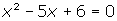
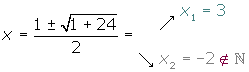

Quadratic Word Problems
1Determine the quadratic equation whose solutions are: 3 and −2.
2Factor:

3Determine the value of k so that the two roots of the equation x2 − kx + 36 = 0 are equal.
4The sum of two numbers is 5 and their product is −84. Find these numbers.
5Within 11 years, the age of Peter will be half the square of the age he was 13 years ago. Calculate the current age of Peter.
6To fence a rectangular farm of 750 m², 110 m of fence has been used. Calculate the dimensions of the farm.
7The three sides of a right-angled triangle are proportional to the numbers 3, 4 and 5. Find the length of each side knowing that the area of the triangle is 24 m².
8A rectangular garden 50 m long and 34 m wide is surrounded by a uniform dirt road. Find the width of the road if the total area of the garden and road is 540 m².
9Calculate the dimensions of a rectangle whose diagonal is 75 m, knowing that is similar to a rectangle with sides measuring 36 m 48 m respectively.
10Find an integer number where the sum with its inverse is .
11Two natural numbers differ by two units and the sum of their squares is 580. What are these numbers?
12Two taps A and B fill a swimming pool together in two hours. Alone, it takes tap A three hours less than B to fill the same pool. How many hours does it take each tap to fill the pool separately?
13The length of the sides of a right-angled triangle are measured as three consecutive even numbers (in cm). Find the values of these sides.
14A rectangular piece of cardboard is 4 cm longer than wide. A box of 840 cm³ is constructed by using this piece of cardboard. A square of 6 cm is cut out in every corner and the rims are folded upwards to create the box. Find the dimensions of the box.
152 faucets can fill a tank in 1 hour and 20 minutes. The first faucet takes more than two hours longer to fill the same tank when functioning without the second tap. How long does it take to fill each one separately?
1
Determine the quadratic equation whose solutions are: 3 and −2.
S = 3 − 2 = 1
P = 3 · 2 = 6
x2 − x + 6 = 0
2
Factor:
3
Determine the value of k so that the two roots of the equation x2 − kx + 36 = 0 are equal.
b2 − 4ac = 0
k2 − 4 · 36 = 0 k2 = 144

4
The sum of two numbers is 5 and their product is −84. Find these numbers.
x2 − Sx + P = 0
5
Within 11 years, the age of Peter will be half the square of the age he was 13 years ago. Calculate the current age of Peter.
Current age  x
x
Age 13 years ago  x − 13
x − 13
Age within 11 years  x + 11
x + 11
Current age  21
21
6
To fence a rectangular farm of 750 m², 110 m of fence has been used. Calculate the dimensions of the farm.
Semiperimeter 55
55
Base  x
x
Height  55 − x
55 − x
x · (55 − x) = 750
x2 − 55x + 750 = 0
x = 25 x = 30
The dimensions of the farm are 30 m and 25 m.
7
The three sides of a right-angled triangle are proportional to the numbers 3, 4 and 5. Find the length of each side knowing that the area of the triangle is 24 m².
1st side (base) 3x
3x
2nd side (height)  4x
4x
3rd side  5x
5x
1st side 6 m
6 m
2nd side 8 m
8 m
3rd side 10 m
10 m
8
A rectangular garden 50 m long and 34 m wide is surrounded by a uniform dirt road. Find the width of the road if the total area of the garden and road is 540 m².
(50 + 2x) · (34 + 2x) − 50 · 34 = 540
4x2 + 168x − 540 = 0 x2 + 42x − 135 = 0
x = 3 and x = −45
The road width is 3 m .
9
Calculate the dimensions of a rectangle whose diagonal is 75 m, knowing that it is similar to a rectangle with sides measuring 36 m 48 m respectively.
Base  48x : 12 = 4x
48x : 12 = 4x
Height  36x : 12 = 3x
36x : 12 = 3x

(4x)2 + (3x)2 = 752
25x2 = 5625
x2 = 225 x = 15
Base  4 · 15 = 60 m
4 · 15 = 60 m
Height  3 · 15 = 45 m
3 · 15 = 45 m
10
Find an integer number where the sum with its inverse is .


11
Two natural numbers differ by two units and the sum of their squares is 580. What are these numbers?
1st number  x
x
2nd number  x + 2
x + 2


1st number  16
16
2nd number  18
18
12
Two taps A and B fill a swimming pool together in two hours. Alone, it takes tap A three hours less than B to fill the same pool. How many hours does it take each tap to fill the pool separately?
Time of A  x
x
Time of B  x + 3
x + 3
A 

B 

A and B 

Time of A  3 hours
3 hours
Time of B  6 hours
6 hours
13
The length of the sides of a right-angled triangle are measured as three consecutive even numbers (in cm). Find the values of these sides.
1st leg  2x
2x
2nd leg  2x + 2
2x + 2
Hypotenuse  2x + 4
2x + 4
(2x)2 + (2x + 2)2 = (2x + 4)2
4x2 + 4x2 + 8x + 4 = 4x2 + 16x + 16
4x2 − 8x − 12 = 0 x2 − 2x − 3 = 0
x = 3 y x= −1
1st leg 6 cm
6 cm
2nd leg  8 cm
8 cm
Hypotenuse  10 cm
10 cm
14
A rectangular piece of cardboard is 4 cm longer than wide. A box of 840 cm³ is constructed by using this piece of cardboard. A square of 6 cm is cut out in every corner and the rims are folded upwards to create the box. Find the dimensions of the box.
6 (x − 12) · (x + 4 −12) = 840 (x − 12) · (x −8) = 140
x2 − 20x − 44 = 0 x = 22 y x= −2
The dimensions are: 26 cm and 22 cm.
15
2 faucets can fill a tank in 1 hour and 20 minutes. The first faucet takes more than two hours longer to fill the same tank when functioning without the second tap. How long does it take to fill each one separately?
1st Time  x
x
2nd Time  x − 2
x − 2
1º 

2º
Between the two 

1st Time 4 hours
4 hours
2nd Time  2 hours
2 hours
is not a solution because the time for the second faucet would be negative.